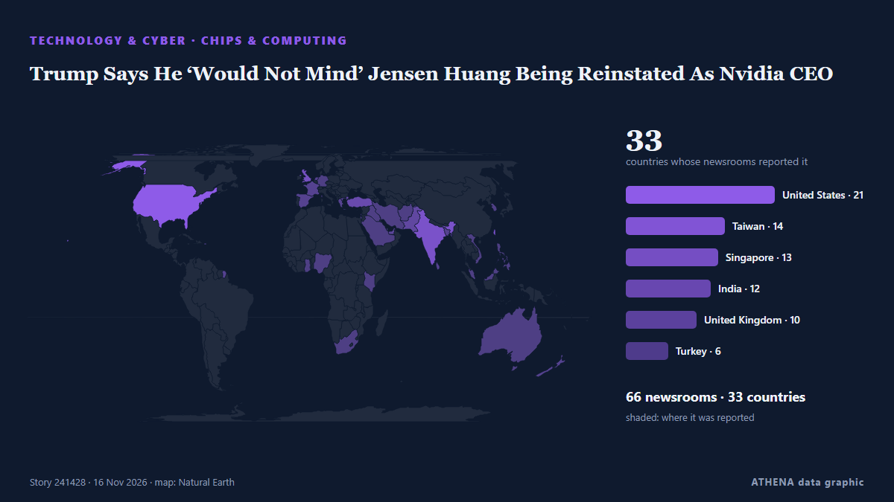

Technology, AI & Cybersecurity
SponsoredPresented by  Cybernetics and Artificial Intelligence Lab Welcome to the Cybernetics and Artificial Intelligence Laboratory, established at the Department of Business Administration of the National and Kapodistrian University of Athens. The lab is headed by Professor Dimitrios Thomakos. The lab aims to do research that can be published in top venues. Our research uses tools and methods of Artificial Intelligence, and lies in the following areas: - Forecasting - Decision making - Cyber security - Finance We are always looking forward to collaborating with exceptional students!
Cybernetics and Artificial Intelligence Lab Welcome to the Cybernetics and Artificial Intelligence Laboratory, established at the Department of Business Administration of the National and Kapodistrian University of Athens. The lab is headed by Professor Dimitrios Thomakos. The lab aims to do research that can be published in top venues. Our research uses tools and methods of Artificial Intelligence, and lies in the following areas: - Forecasting - Decision making - Cyber security - Finance We are always looking forward to collaborating with exceptional students!

Chips & computingTrump Says He ‘Would Not Mind’ Jensen Huang Being Reinstated As Nvidia CEO
Trump again proposed replacing Huang with Apple’s Tim Cook. from Forbes Business
| 3 Nov | 102 |
|---|---|
| 4 Nov | 99 |
| 5 Nov | 112 |
| 6 Nov | 54 |
| 7 Nov | 37 |
| 8 Nov | 42 |
| 9 Nov | 103 |
| 10 Nov | 114 |
| 11 Nov | 83 |
| 12 Nov | 75 |
| 13 Nov | 87 |
| 14 Nov | 38 |
| 15 Nov | 37 |
| 16 Nov | 32 |
Apple launches new app to study how people use AI for health
Apple's new app for a study will answer everyday medical questions. from TechCrunch
Inside China's drive to build an AI-native generation
By 2030, Beijing wants AI literacy to be universal among schoolchildren. from The Business Standard (Bangladesh) (working feed)
SK Hynix to spend $1 billion over five years to support chip suppliers
SEOUL: South Korea’s SK Hynix said on Monday it plans to spend 1.4 trillion won ($1.05 billion) over the next five years to support domestic suppliers of semiconductor materials, parts and… from Business Recorder
Coles hit by cybersecurity incident
Supermarket giant Coles has urged customers to shop as normal after revealing it had identified as cybersecurity incident. from Sydney Morning Herald
NASA’s Voyager 1 nears historic milestone of reaching one light-day from earth
The probe, now travelling through interstellar space, is close to reaching a distance of one light-day from Earth. from Free Malaysia Today
Estonia prepares cloud-based digital government to keep public services running in case of occupation
Estonia is developing technological infrastructure that will allow the government to keep digital public services running even if the country is occupied or its data centres are destroyed. from Ukrainska Pravda (English)
Tzolis Given All-Clear After MRI Ahead of Greece vs Serbia
Christos Tzolis has been cleared to face Serbia after an MRI scan found no injury, according to journalist Dimitris Manakos. from Greek City Times
Elon Musk signs petition to reinstate Jensen Huang as Nvidia CEO
An online petition with over 91,000 signatures is calling for the reinstatement of Nvidia's disgraced former CEO. from Tom's Hardware
Megaspeed investigates Alice Huang links as Jensen Huang faces Congress
Singapore-based Megaspeed has launched an internal investigation after reports linked its former executive Alice Huang to Nvidia’s former chief executive, Jensen Huang, and to allegations that she… from Gulf News
Democratic US senators order Elon Musk to preserve records on Ukraine Starlink access
Democratic US senators have told Elon Musk to preserve all records related to his company SpaceX's restrictions on Ukraine's use of its Starlink and Starshield satellite services. from Deccan Herald
South Korea’s top scorer in tax accountancy exam admits cheating
Han Won-seok, 34, confessed to using a hidden camera and AI to get a near-perfect mark on the significant test. from BBC News
Top tax accountant exam scorer admits to cheating using AI
The top scorer in Korea’s recent tax accountant qualification examination admitted Sunday that he used generative artificial intelligence (AI) and a camera to cheat, reversing his earlier denials… from The Korea Times
Zelensky urges US and Musk to lift Starlink restrictions and be on 'right side of history'
The Ukrainian president says the slowed-down internet is making it difficult to stop Russian attacks. from BBC News
US Treasury chief wants answers soon from Nvidia
Nvidia faces fresh scrutiny over claims that its most advanced AI chips reached China via Southeast Asia, with a Justice Department criminal probe underway. from CNA (Channel NewsAsia)
SpaceX’s Starship breakthrough as it’s captured by launch pad after orbit
SpaceX’s Starship made a triumphant return to Earth as it was caught in mid-air by giant mechanical arms in a dramatic first. from Sydney Morning Herald
Nvidia confirms planned supply of GPUs to S. Korea despite Huang's resignation: science minister
U.S. tech giant Nvidia Corp. has confirmed its commitment to deploying up to 260,000 graphics processing units (GPUs) in South Korea in partnership with South Korean companies, Seoul's science… from The Korea Times
Crawford: It's 'premature' to place blame on Lutnick for Nvidia chip sales
Treasury Secretary Scott Bessent said Friday he was frustrated with the Commerce Department’s delay in implementing restrictions over the export of certain Nvidia chips to China. from The National Herald
Microsoft announces service 'restored,' global outage over
Tech giant Microsoft said Saturday it has "restored service" to customers, effectively drawing a close to a massive outage that caused chaos and disrupted public services and business around the… from Vanguard
Tears and disbelief in Taiwan, where Jensen Huang is a celebrity
New York Times: The former Nvidia CEO is known in Taiwan as 'the people's dad'. from New Zealand Herald
SpaceX pulls off first-ever spaceship 'catch'
Elon Musk's SpaceX carried out first-ever recovery of a spaceship, pulling off a "catch" of its Starship as it returned to its launch site. from Vanguard
Notes from Central Taiwan: Taiwan’s history has no inevitable destination
Lakeshore Restaurant: Where Tradition Meets Contemporary DiningOur journey to explore Taiwan's exquisite cuisine began on a delightful note with an eight-course lunch at Lakeshore... from Arab Times
SpaceX Starship returns to landing pad from orbit, acing test for reusable rockets
Starship upper stage’s successful return after orbiting Earth marks a key engineering milestone. from The Business Times
‘A moral red line’? World on cusp of autonomous weapons revolution
Lethal autonomous weapons powered by artificial intelligence are set to revolutionise warfare but there is no proper regulatory or legal framework governing the new technology. from Al-Monitor
Panamanian authorities investigate bombing attack on investigative reporter’s home
Panamanian authorities are probing a bombing at the home of investigative journalist Rolando Rodríguez that caused property damage but no injuries. from Arab News
Humain raises $667m for AI buildout in Saudi Arabia
Funding secured alongside the National Infrastructure Fund. from Data Center Dynamics
Nvidia 'spy' scandal: Megaspeed Malaysian arm Speedmatrix under scanner
Investment, trade and industry minister Johari Ghani says there is no evidence yet that Speedmatrix Sdn Bhd contravened Malaysian law. from Free Malaysia Today
SpaceX's Starship nears end of 15th test flight and return-landing attempt
STARBASE, Texas, Nov 14 - SpaceX's next-generation Starship spacecraft cruised around the globe on Saturday nearing the end of its 15th test flight and what the company hoped would be an… from The Straits Times
EU leaders seek to tackle challenges at first ever AI summit
Meeting comes amid mounting alarm after series of incidents involving rogue AI agents, resignation of Nvidia CEO. from Express Tribune
Tesla opens Cybercab pre-orders ‘for personal use,’ with geo restrictions and a $299 monthly fee
Even Elon Musk said the monthly fee is "too high." from TechCrunch
‘Baby, she’s back!’ SpaceX’s Starship is caught midair in a dramatic first
It was the grand finale that Elon Musk and his team hoped for – the first-ever capture of a Starship flying back from space. from Sydney Morning Herald
ChatGPT Wallet lets OpenAI’s Dots agents make purchases for you
OpenAI announced "Businesses in ChatGPT" and aims to rock the business world. from Forbes Business
Modi summons telecom secretary over website takedowns, sources say
Fake court orders used to block 129 illegal betting websites prompt criminal investigation for forgery, cheating. from Express Tribune
SpaceX launches Starship on ambitious 22-hour Flight 15 test, but aborts booster 'chopsticks' catch (video)
SpaceX's Starship megarocket reached orbit today (Nov. from Space.com
Microsoft restores service to Outlook and Teams after global outage
Downdetector logs over 7.4m reports worldwide, highlighting global dependence on Microsoft's workplace tools. from Express Tribune